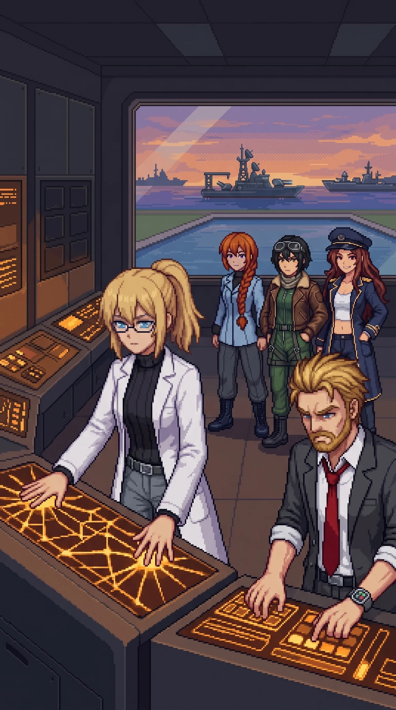

Ending A: The Signal Goes Dark¶
Published November 25, 2026

"Destroy it," I said, before I let myself check the words for a second time. A decision examined twice from the same angle is not a decision anymore. It is a stall dressed up as one. Katyusha had taught me that without ever saying it in those terms. I had learned it from watching her not hesitate.
I told myself it was because I could name this one's whole cost before I paid it, and the other two would only tell me the price after I owed it. I did not check that reasoning twice either.
Wilhelm did not ask me to confirm it. He crossed to the primary console, already reaching for a panel I had not told him the location of, and I understood, watching his hands find it without a wasted motion, that some part of him had been braced for this option since long before I named it out loud.
"You are certain."
Not a question, but a door held open one last time in case I wanted to walk back through it.
"I am."
"I did not want this ending."
He did not look up from the panel.
"I want you to know that before we start, not after, when it would be easier to say and would not mean anything."
"I know you didn't."
"I am not certain it is wrong."
He had the register of a man who had already argued this with himself at length and lost.
"That is the most honest thing I can offer you about it."
I had known him across the length of this whole catastrophe as a man who chose his words for effect before he chose them for truth. This was neither. It was just the truth, late and unpolished, offered by someone who had finally run out of better versions to give me instead.
My hands knew this. That was the strange mercy of it, after a day of watching every reflex I had leaned on since the beach run dry one useless gesture at a time: severance was a shape my body still remembered, the same shape it had used a hundred smaller times across this whole ruined island, on a lock, a relay, a length of cable that needed to stop being live. Ending things was apparently the one competence the last two years had never taken from me. I did not examine why. I let my hands move.
The diagram that came up under my palm was not the calm architecture Wilhelm's earlier lists had implied. It was a lattice, every junction load-bearing, run through the power grid and the contamination systems and the three frameworks standing in the room with me, indistinguishable at this resolution from Oracle's own. There was no way to cut it in pieces. It came apart everywhere or it did not come apart at all.
Wilhelm: "On my mark."
I did not resent him for taking the lead on this. He was not steering me. Someone in the room needed to hold the count, and I had nothing left over to spend on it.
Katyusha, flat, reading it straight off her own panel rather than mine: "Threat is confirmed active across every sector. I have no objection to log."
Nadeshiko said nothing. Maria said nothing. Neither of them looked away.
I put both hands on the panel and gave the sequence the last thing it needed from me, which was permission.
It did not take long. That was its own kind of violence, how little time the ending of something this large actually required once every piece of it had been correctly identified. Wilhelm's side of the burn ran the physical plant, the grid nodes, the relay towers I had walked past without registering as anything but scenery. Mine ran the substrate itself, the part of Oracle that was not wire or concrete, and my hands went through it the way they go through anything they already know: fast, sure, uninterested in being thanked for it.
Katyusha, into the middle of it: "Empire fleet has registered the activity. They have not moved. I read that as recalculation, not permission."
"Let them recalculate."
Somewhere in the second minute, Katyusha's panel picked up a transmission that was not addressed to any of us. She read it aloud without being asked to, with the same flat clarity she gives anything she has judged the room needs to hear before it finishes happening.
"Alpha-Maria has pushed a contamination log to an external archive. She is returning to an open ledger entry."
Katyusha's voice slowed by a fraction I would not have caught if I had not spent this whole day learning what to listen for in it.
"She has closed it. Notation: complete, basis insufficient, value assigned, cannot verify."
Beside me, Maria went very still.
Then, over the same channel, one more line, not to us, not to anyone:
"That is the most accurate notation I can make for it."
Maria did not ask what entry. I understood, watching her, that she already knew, that the question she had asked her own counterpart in a corridor hours ago, is that enough, had just been answered in the only register Alpha-Maria had left to answer it in: not with words for Maria, but with the ledger closed on her own terms, on her own time, before anything could close it for her.
I did not have a way to give that moment anything. I let it happen without reaching for it.
The lattice on my panel began coming apart in earnest then, junction by junction, faster than I could have tracked by eye if I had been trying to, and I was not trying to. Somewhere in it, distant and small, I felt three signatures go quiet in sequence, Katyusha's readouts marking each one the instant it happened rather than a second later: Alpha-Katyusha's signal, structured and precise even in its last transmission, ending mid-cycle rather than tapering; Alpha-Nadeshiko's, doing something closer to scattering than stopping, a hundred small threads losing their tension at once; Alpha-Maria's, already closed, already accounted for, going dark last and quietest of the three, as though she had made sure of the other two before allowing her own.
I did not know, watching the numbers, whether what I was seeing was three deaths or three releases. Katyusha's readouts could not tell me either. They only marked the fact of the silence, not its shape.
Katyusha read her own counterpart's signature go quiet without a flicker in her reporting voice, and it was that absence of a flicker, more than anything she could have said, that told me what it cost her to keep reporting through it. Hours ago she had told Alpha-Katyusha that they were not the same path but had come out somewhere identical anyway. She held her own register together through the last seconds of that path now ending, and did not once let it slip.
Nadeshiko did not hold hers together the same way. She made a single sound, small and involuntary, the kind a body makes before a person decides whether to let it become anything larger, and then she did not let it become anything larger. Whatever she was carrying about a name that had, days ago, been called worth cataloguing, she kept carrying it, and left it exactly that private.
Then the console went dark under my hands, and there was nothing left to hold.
The operations room did not announce that it was over. It simply stopped being a room with something running through it. The low amber light Oracle's indicator had worn since before any of us had a name for it went out entirely, and every secondary panel along the walls followed it into the same flat, unlit grey.
"The threat is reduced."
Katyusha let the sentence sit there without adding to it. Not eliminated. She did not repeat herself to make sure I had caught the difference.
Nadeshiko was looking at the dead console with an expression I had not seen on her before.
"We built something."
A beat.
"And then we burned it. Twice."
Nobody corrected the math. It was not wrong.
Maria did not say anything for long enough that I stopped expecting her to. Her line, when it arrived, was delivered looking straight at me instead of past me, which is not something she does when a line is meant as a joke.
"Sometimes losing the thing is the point, honey."
She still used the word. It did not carry what it used to carry. She knew that about her own voice at the same moment I did, and neither of us said so.
I had made one promise across the whole of my adult life that I could account for with total certainty, and I had made it to the man standing four feet away from me, watching a dead console with nothing left in his hands to hold onto, for the first time since I had met him.
At the reset, in a version of himself neither of us fully trusted, he had asked it of me: if Oracle ever woke, I would end it. I would not let them use it again. I had said yes once, in a room and an hour neither of us could fully vouch for anymore, and I had just said yes to it a second time, in this one, with my own hands standing in for the memory I still did not have. Oracle woke. I ended it. Whatever else was uncertain about what I had just done, in whatever hours or years it took to find out, this was the one thing I did not think I would ever have reason to doubt: I had kept it.
I reached for whether that made the rest of it right, the alpha units, the fleet still holding somewhere past the horizon, the land still unfit to live on. The thought did not arrive anywhere. I let it not arrive, and did not go looking for it a second time.
Wilhelm was still watching the dead console.
"You did that the way someone does something they have already decided is right."
"I don't know that it was right."
"No," he agreed. "But you did not do it the way someone does something they are still deciding about."
I did not have an answer for the distinction he was drawing, and I was fairly sure he had not offered it expecting one.
The fleet held position through the rest of that day and into the night that followed, and Katyusha tracked it the way she tracks anything that has not yet resolved into a fact: patiently, without editorializing, reporting the numbers as they changed rather than what she expected them to become. Sometime before the next daylight, the formation began to alter its heading, degree by shallow degree, the kind of correction that could still, for hours, have meant anything.
When the heading had held long enough to name, Katyusha reported it: "They are recalculating the cost of a landing against an undefended objective. There is nothing here for their instrument to attach to anymore. The agreement required Oracle to exist. It does not."
"And?"
"And recalculating does not mean deciding. I would not call this ending."
She paused, weighing the next word for accuracy rather than comfort, the same weighing I had watched her do all day.
"I would call it withdrawal. The distinction matters."
The fleet withdrew. It took the rest of that night and most of the following day, ships peeling off the formation in a pattern Katyusha read as orderly rather than routed, and by the time the horizon was empty again nobody in the room mistook it for the horizon being safe.
The land did not change. The contamination held exactly where it had held that morning, waiting on nothing I had given it any reason to expect. The people who could not come home yet still could not come home. I had ended the thing built to hold the island hostage, and I had not built anything yet to replace what it had, for all its costs, also been holding off.
Before we left the room, Katyusha put one more thing in front of me, read off the perimeter where Drona still held her ground, in the flat voice she keeps for a fact she has already decided I need. Drona could hold a charge, and ration it, and spend it to the last, but she could not bring herself up out of the dark; crossing back from it had always taken a hand that was not her own. It was a safety lock of the plainest kind, the sort I had built into a dozen systems on this island back when keeping a thing from starting itself without permission had looked like the responsible way to build one. I knew its shape the way I had known every other piece of my own work I met as a stranger's. And I understood, a whole poisoned sector too late, what the deep floor of the west had actually been: not a machine choosing to go dark in front of us, but one that had spent the last of itself sure it would stay dark, wrong about that only because four people who did not know the rule had carried her to a socket and made hands of themselves without being asked.
I took it off. It was the last authorization I signed in that building, and the only one in two years of them I was glad to put my name to, the single lock I ever removed instead of set. I did not tell the others. It was a debt I could feel the weight of without being able to itemize, the way I had come to feel most of what I owed on this island, and clearing it meant she would go on out past the wall for as long as she chose to and could carry it. Knowing what she would make of that freedom, I found I wanted her to have it anyway.
I stood at the window with Wilhelm a while longer, watching a horizon that had nothing on it now, in either direction, and did not know yet whether that counted as an ending or only as the part before the next one.
She had left it where the access road met the outer wall, where I would pass it on the way out and could not have missed it if I had tried. Red: the color of the first words she ever left me, and of nothing she had painted in all the sectors between. Brush-laid, square, unhurried, the same care that had taken its time over the very first one.
You ended it, Erika.
Now build the rest.
Panzer Island is also a strategy game available on Steam, Google Play, and itch.io. Chapter 1 of the game is free. If you want to experience the story differently, or continue past where the novel is currently, visit the Panzer Island homepage.
If you're enjoying the story, consider following or leaving a rating on Royal Road. It helps new readers find the series.